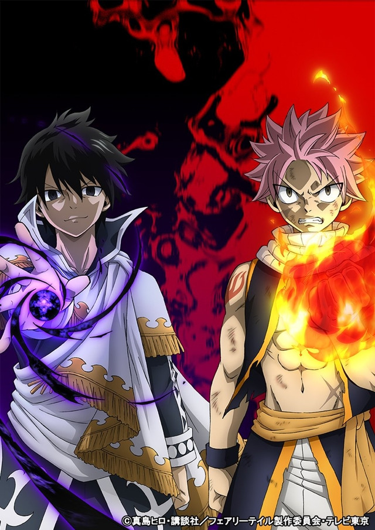

Fairy Tail
Fairy Tail adalah sebuah seri manga Jepang yang ditulis dan diilustrasikan oleh Hiro Mashima. Manga ini diserialisasikan di Weekly Shōnen Magazine sejak tanggal 2 Agustus 2006 hingga 26 Juli 2017, dan telah dibundel dan diterbitkan menjadi 63 volume tankōbon oleh Kodansha.
HELLO... ANIME LOVERSS
Lebih Lengkap – Hallo para pembaca Fairy Tail, pertama-tama kami ingin mengucapkan Selamat Tahun Baru 2018 untuk para pembaca semuanya, semoga tahun ini menjadi tahun yang lebih baik untuk kita dibanding tahun-tahun sebelumnya.
Tempat Baca Komiknya !!!! INI adalah tempat para Anime Lover Membaca Komik Fairy Tail.

Deskripsi
Natsu Dragneel (グレイ · フルバスタ Natsu Doraguniru) adalah seorang karakter fiksi dan tokoh utama pria dalam serial anime dan manga Fairy Tail karya Hiro Mashima. Dia adalah seorang Dragon Slayer Api, seorang anggota Serikat Fairy Tail dan anggota Dari Tim Natsu. Dia telah meninggal 400 tahun yang lalu dan dia juga adik laki-laki dari Zeref, Ia dibangkitkan sebagai Etherious terkuat. END
Artikel Responsive Lain
- Watch Anime
- Mau Liat Fandomnya ????
Nonton Anime Lain Lengkap Disini